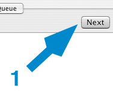
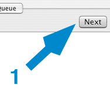

Moving to the next song
This can be done at anytime, and can be used to "skip" a song that you do not want to apply lyrics to; or after applying lyrics to a song.
To move to the next song
- Click on Next

This can be done at anytime, and can be used to "skip" a song that you do not want to apply lyrics to; or after applying lyrics to a song.
To move to the next song
